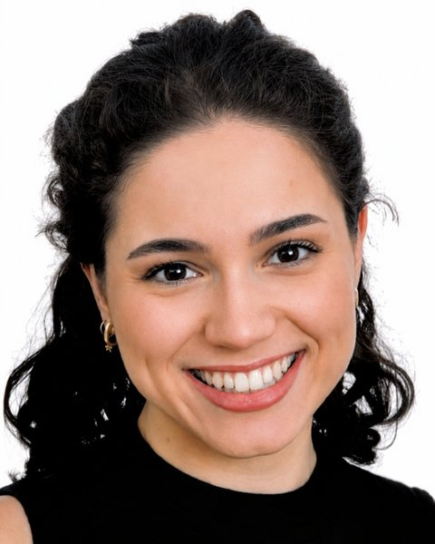

Ingeniera industrial · Consultora ERPVictoria Carbonell Sánchez
Implanto Odoo en empresas industriales y de distribución, y conecto sus sistemas con IA aplicada a procesos de negocio.
Odoo Silver Partner
UPCT · en curso
Presencial o híbrido
Hoja de ruta
Pulsa una operación para ver el detalleExperiencia
3 puestos›
Consultora ERP
jul 2025 – actualidadMirandir (antes Onmi Engineering) · Murcia, híbrido
Llevo una cartera propia de clientes de los sectores industrial, agroalimentario, distribución, e-commerce y servicio técnico, desde el análisis de procesos hasta el desarrollo a medida y el soporte en explotación.
- Análisis y rediseño de procesos con los responsables de producción, almacén, compras, ventas y administración.
- Configuración de fabricación (listas de materiales, rutas, órdenes de producción, trazabilidad por lote y número de serie), calidad y logística, incluidos almacenes de consigna.
- Desarrollo de módulos en Python sobre el framework de Odoo, con Git y entornos de desarrollo, pruebas y producción.
- Integraciones con aplicaciones externas mediante servicios web, plataformas de e-commerce y operadores logísticos.
- Migraciones de versión, migración de datos, informes y cuadros de mando.
- Resolución de incidencias con análisis de causa raíz y formación a usuarios.
He conectado sistemas Odoo de clientes con asistentes de IA (LLM) mediante MCP para que puedan consultar y trabajar con los datos de su ERP en lenguaje natural.
Becaria de colaboración
nov 2024 – jun 2025Dpto. de Automática, Ingeniería Eléctrica y Tecnología Electrónica · UPCT
Beca del Ministerio de Educación en el proyecto «Automatización de procesos en empresas de servicios de ingeniería mediante desarrollo de software en la nube», continuación de mis prácticas en LEMAR.
- Evolución de la aplicación web de gestión de inspecciones.
- Despliegue en Microsoft Azure con Docker y Azure Container Registry, y CI/CD con GitHub Actions.
- Pruebas funcionales y documentación técnica.
- Diseño de una PCB como material docente para la asignatura de Electrónica Industrial.
Estudiante en prácticas
jun – ago 2024Cloud Incubator HUB · LEMAR, laboratorio acreditado por ENAC
Prácticas en el departamento informático de LEMAR, laboratorio de ensayos de máquinas recreativas acreditado según ISO/IEC 17025, desarrollando una aplicación web para la gestión de inspecciones.
- Formación en la norma ISO/IEC 17025 y participación en ensayos acreditados, para entender el proceso antes de digitalizarlo.
- Desarrollo de la interfaz y la lógica de negocio con Python (Flask, Streamlit), API REST y MySQL.
Proyectos
3 proyectos›
Comparativa de modelos base, instruct y de razonamiento
nov 2026Experimento propio en Hugging Face
Tres preguntas sencillas a tres tipos de modelo para ver en la práctica qué cambia entre preentrenar, ajustar a instrucciones y entrenar para razonar.
Le dije Hola
y empezó una receta en inglés. Continúa texto, no conversa.
Explicó un motor de combustión «para un niño de 10 años», pero con errores técnicos. Seguir instrucciones no garantiza acertar.
Acertó un problema de lógica con un razonamiento que partía de una suposición falsa. Una respuesta correcta no implica un razonamiento correcto.
Pruebas exploratorias con ejemplos concretos, no un benchmark. Ver la publicación ↗
Aplicación web para automatizar inspecciones de máquinas recreativas (TFG)
2024 – 2025Grado en Ingeniería en Tecnologías Industriales · UPCT · Laboratorio ISO 17025
Sustituye la redacción manual de informes de inspección por un formulario guiado que valida los datos, genera el informe en PDF y lo envía por correo al cliente.
- Frontend en Streamlit y backend en Flask con API REST, autenticación JWT y MySQL.
- Pruebas unitarias, de integración y de rendimiento, y verificación de los requisitos de la norma.
- Despliegue en Azure App Service, Azure Database for MySQL y Container Registry, con CI/CD en GitHub Actions.
Inspección de piezas mediante visión artificial
2025Trabajo final · Lenguajes de Programación · GITI, UPCT
Aplicación de escritorio en C# que inspecciona piezas mecánicas pequeñas con una cámara industrial: captura vídeo en tiempo real, separa cada pieza del fondo y la clasifica automáticamente.
- Cámara industrial IDS (GigE) con óptica de 16 mm e iluminación a contraluz para obtener siluetas nítidas.
- Procesado con Emgu CV (OpenCV para .NET): binarización por umbral, detección de contornos y su jerarquía para distinguir piezas de agujeros.
- Clasificación por reglas a partir de área, perímetro, circularidad, solidez, relación de aspecto, vértices y número de agujeros: tornillos, tuercas, arandelas, llaves Allen, ganchos y placas de unión.
- Interfaz en Windows Forms con vídeo en directo, carga de imágenes, contadores por tipo de pieza y ajuste de exposición, ganancia y FPS.
Formación
UPCT›
Máster Universitario en Ingeniería Industrial
2025 – actualidadUniversidad Politécnica de Cartagena
En curso, compaginado con el trabajo a jornada completa.
Grado en Ingeniería en Tecnologías Industriales
2021 – 2025Universidad Politécnica de Cartagena
Nota media 8,21 · 6 matrículas de honor.
Bachillerato científico-tecnológico
2019 – 2021Colegio de Fomento Monteagudo-Nelva
Nota 10, matrícula de honor y Premio Extraordinario de Bachillerato.